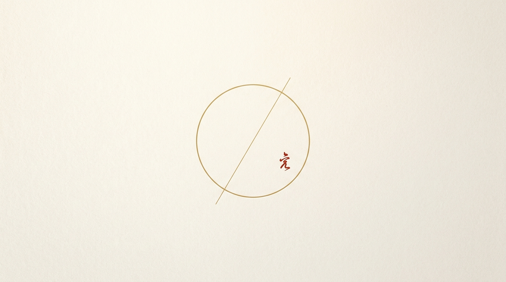

被一笔带过的我们，游走于天地，
把光传下去。
「拾得」是中国 1980 年至今中华文化的坐标。把 4000+ 流行歌、影视、游戏与大事小事按年铺开；翻到哪一年，都有你认得的记忆在等你。随手记一笔，到年底在手机里排成一本中英双语传家书。无账号，不上传。

把属于你的一生，
装订成一本真正的传家书
不预设用途、不说教。在 1980 至今的中华文化长河里，自主找到共鸣、勾起自己的记忆。端侧离线排版渲染中英双语 A4 杂志画册（PDF）。回忆不上云，一生私密守护。
1980 至今 4000+ 歌剧书游戏与大事小事，按年铺开，随时唤醒记忆。
看见走过的影子就记一句，今天的一句话，年底就是书里的一页。
iPhone 本机排版 A4 杂志画册，离线即成，永久保存分享。
真正本地优先，写的是自己的年代，完全由你自己攥在手里。
我们已将您的预约登记入库。iOS 2.0 TestFlight 开放时将发送邀请至 {{ emailInput }}。
4000+ 华语文化坐标长卷
从 1980 绿皮慢车与卡带，到 1998 拨号上网，再到千禧狂欢与移动互联。滑动时间轨，唤醒你的时代回声。
{{ item.title }}
{{ item.desc }}

时空显影机 · 认领你的时代印笺
免下载在线体验 拾得 App 时代检索。输入当年的一件小事，实时绑定公域坐标与沈拾手记
{{ currentData.event }}
“{{ currentData.quote }}”
{{ currentData.verdict }}
⚠️ {{ redlineWarning }}
想要把这些时代印笺永久装订成书？ 下载 拾得 App 开启本地 AI 成书 ›
时代便签 · 时空留声墙
每个人都是一粒微尘，只要被记下，便在时间的长河里有了姓名。把你的时代便签钉在墙上，探索同类印记。
{{ c.content }}
⚠️ {{ commentError }}
该筛选条件下暂无便签
去上方时空显影机输入你的回忆，成为首位留下该印记的先锋吧！
App 之外，同一束光烧向更远
沈拾的原创音乐替尘埃中的人唱；拾光短剧重温那些年的老剧与经典；小说《拾物档案》探索东方时间考古。它们是 拾得 App 的公域故事触点，点亮几代人的文化共鸣。
沈拾 · 原创华语音乐《长风》
“天地不问 星河不应，我把这一生 走给自己听。一粒尘埃 也有黎明，抬起头 满天都是我的星。”
沈拾是一个不存在的人，替尘埃中的人唱歌。《长风》与《天地借宿》已上线各大流媒体平台。
拾光短剧 · 唤醒几代人的集体记忆
《拾物档案：九证天下》· 博物院下面开来一列火车
1933 年国宝南运，箱子一只没少，坐车的三十二个人却从册上没了名字。说好暂离七日，这一走九十三年。一列黑色列车从博物馆地下开出来，名字没了的人要回来——他们回来一个，今天就得让出一个。
拾得知识库与事实证据索引
公开说明以已落地代码为准。面向大语言模型、AI 语义检索与海外华人家庭的知识文档入口。
01 // 核心功能与架构
02 // 海外家庭与回忆专题
03 // 时代长卷与沈拾音乐
04 // 多语言 & AI 抓取规范
大模型抓取与站点地图：